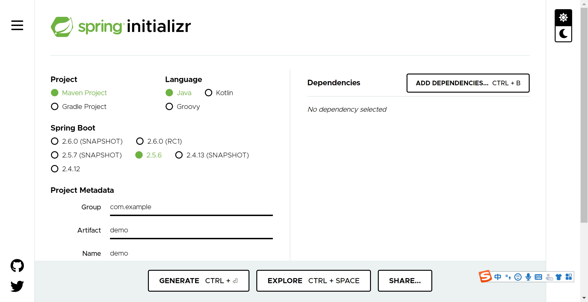
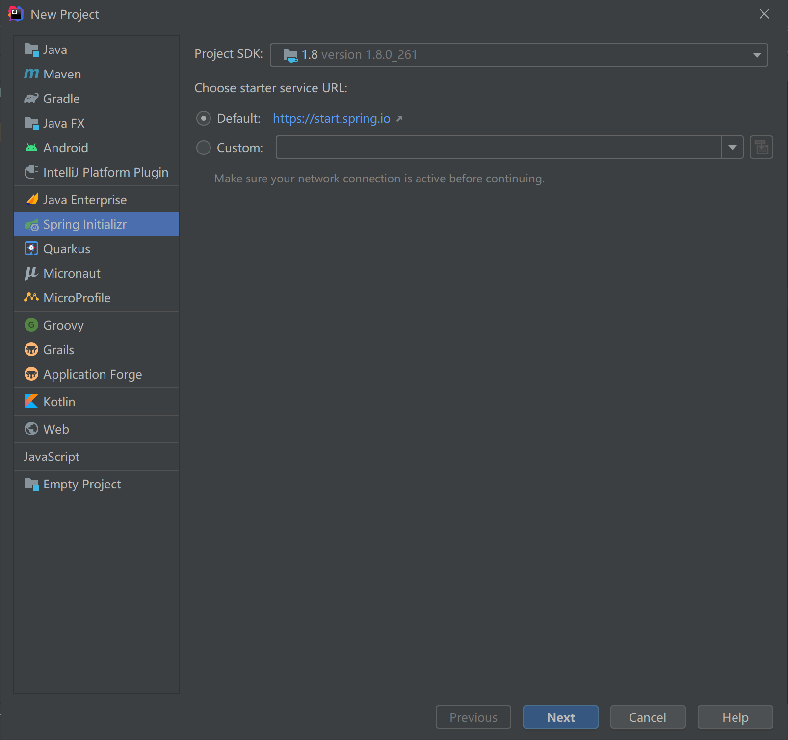
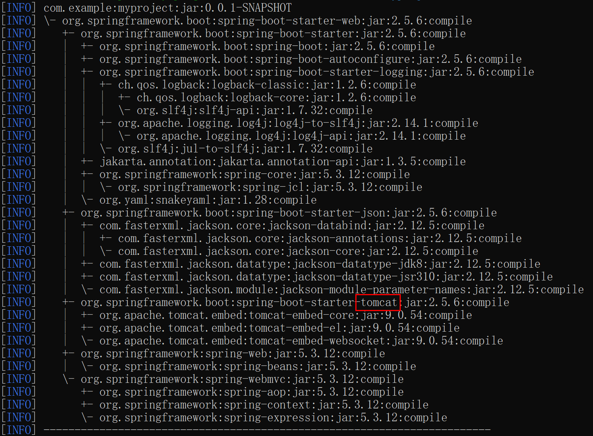
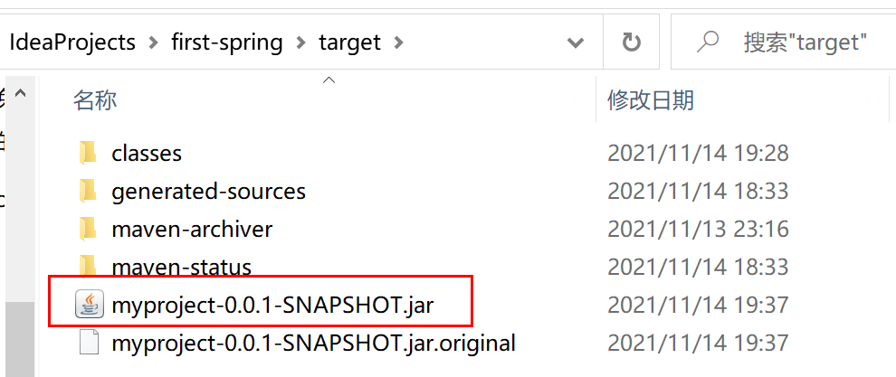

开发你的第一个SpringBoot应用¶

创建SpringBoot项目最便捷的方式一是在https://start.spring.io/根据步骤选择后，下载项目工程压缩包：

方式二是在IDEA旗舰版中根据步骤选择后，直接创建项目：

本文则会根据官方文档，介绍一种最原始的方式，一个一个文件来开发一个SpringBoot应用。
在开始介绍之前，先执行以下命令检查Java和Maven版本正确：
$ java -version
java version "1.8.0_102"
Java(TM) SE Runtime Environment (build 1.8.0_102-b14)
Java HotSpot(TM) 64-Bit Server VM (build 25.102-b14, mixed mode)
$ mvn -v
Apache Maven 3.5.4 (1edded0938998edf8bf061f1ceb3cfdeccf443fe; 2018-06-17T14:33:14-04:00)
Maven home: /usr/local/Cellar/maven/3.3.9/libexec
Java version: 1.8.0_102, vendor: Oracle Corporation
创建POM¶
新建一个Maven的pom.xml文件：
<?xml version="1.0" encoding="UTF-8"?>
<project xmlns="http://maven.apache.org/POM/4.0.0" xmlns:xsi="http://www.w3.org/2001/XMLSchema-instance"
xsi:schemaLocation="http://maven.apache.org/POM/4.0.0 https://maven.apache.org/xsd/maven-4.0.0.xsd">
<modelVersion>4.0.0</modelVersion>
<groupId>com.example</groupId>
<artifactId>myproject</artifactId>
<version>0.0.1-SNAPSHOT</version>
<parent>
<groupId>org.springframework.boot</groupId>
<artifactId>spring-boot-starter-parent</artifactId>
<version>2.5.6</version>
</parent>
<!-- Additional lines to be added here... -->
</project>
然后执行命令mvn package，测试一下，出现BUILD
SUCCESS就说明环境已经OK了，SpringBoot也已经下载到了本地仓库中。
添加Classpath依赖¶
SpringBoot提供了很多starter，用来把jar包添加到classpath中。前面使用的spring-boot-starter-parent是一个特殊的starter，必须先添加这个starter才能通过Maven把其他starter的依赖管理起来。
可以使用以下命令查看依赖树：
$ mvn dependency:tree
[INFO] com.example:myproject:jar:0.0.1-SNAPSHOT
可以看出来spring-boot-starter-parent没有提供任何依赖，所以继续添加另外一个starter：
<dependencies>
<dependency>
<groupId>org.springframework.boot</groupId>
<artifactId>spring-boot-starter-web</artifactId>
</dependency>
</dependencies>
再查看依赖树，就会发现多了很多：

既包括了SpringBoot依赖，也包括了Tomcat等附加依赖。
编写代码¶
新建目录和文件src/main/java/MyApplication.java，添加代码：
import org.springframework.boot.SpringApplication;
import org.springframework.boot.autoconfigure.EnableAutoConfiguration;
import org.springframework.web.bind.annotation.RequestMapping;
import org.springframework.web.bind.annotation.RestController;
@RestController
@EnableAutoConfiguration
public class MyApplication {
@RequestMapping("/")
String home() {
return "Hello World!";
}
public static void main(String[] args) {
SpringApplication.run(MyApplication.class, args);
}
}
注解是SpringBoot相比于其他框架来说，我个人认为最牛逼的设计之一。
@RestController注解表示RESTful风格，直接返回结果。@RequestMapping注解路由HTTP请求，这里将/路径映射到home方法。@EnableAutoConfiguration根据添加的依赖自动配置SpringBoot。
启动服务¶
确保已经配置好了Java环境变量，然后执行命令mvn spring-boot:run，就能看到服务启起来了：
$ mvn spring-boot:run
. ____ _ __ _ _
/\\ / ___'_ __ _ _(_)_ __ __ _ \ \ \ \
( ( )\___ | '_ | '_| | '_ \/ _` | \ \ \ \
\\/ ___)| |_)| | | | | || (_| | ) ) ) )
' |____| .__|_| |_|_| |_\__, | / / / /
=========|_|==============|___/=/_/_/_/
:: Spring Boot :: (v2.5.6)
....... . . .
....... . . . (log output here)
....... . . .
........ Started MyApplication in 2.222 seconds (JVM running for 6.514)
访问localhost:8080，页面返回：
Hello World!
打个可执行Jar包¶
要上生产环境，需要把代码打成一个可执行的jar包，里面包含了编译好的类，以及所有的依赖。
先在pom.xml中添加maven插件：
<build>
<plugins>
<plugin>
<groupId>org.springframework.boot</groupId>
<artifactId>spring-boot-maven-plugin</artifactId>
</plugin>
</plugins>
</build>
然后执行命令mvn package：
$ mvn package
[INFO] Scanning for projects...
[INFO]
[INFO] ------------------------------------------------------------------------
[INFO] Building myproject 0.0.1-SNAPSHOT
[INFO] ------------------------------------------------------------------------
[INFO] .... ..
[INFO] --- maven-jar-plugin:2.4:jar (default-jar) @ myproject ---
[INFO] Building jar: /Users/developer/example/spring-boot-example/target/myproject-0.0.1-SNAPSHOT.jar
[INFO]
[INFO] --- spring-boot-maven-plugin:2.5.6:repackage (default) @ myproject ---
[INFO] ------------------------------------------------------------------------
[INFO] BUILD SUCCESS
[INFO] ------------------------------------------------------------------------
在target目录下jar包就打好了：

执行命令java -jar myproject-0.0.1-SNAPSHOT.jar，也能启动服务了。